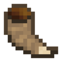

Ріг руйнування
Ріг руйнування — це один з скарбів, які ти отримаєш за виконання завдання Квестового барана. Під час використання блоки навколо гравця починають тріскатися та перетворюватися на інші блоки. Усі блоки, які можна перетворити таким чином, наведені десь в таблиці нижче. Дуже важливим є те, що під час використання рога чути мекання барана)
- Тип: інструмент
- Міцність: 1024
- Відновлюваний: ні
- Складається: ні
- ID: twilightforest:crumble_horn

Ріг руйнування можна використовувати за допомогою роздавача, тобі блоки будуть тріскатися прямо перед ним. Це витрачає 1 одиницю міцності. На відміну від інших предметів, які можна використовувати в роздавачі, ріг руйнування не зламається навіть коли в нього не залишиться міцності. Він просто відмовиться працювати.